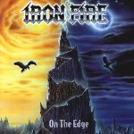

|
|
||
Iron Fire : On the Edge (2001) |
|

http://www.ironfire.com |
1. Eternal Damnation 1:11 |
7.2/10 |
|
"On the Edge" es el segundo disco de los daneses Iron Fire, y representa cierta evolución con respecto al primero, "Thunderstorm", pero este debut es realmente difícil de superar. El cantante, Martin Steene, tiene una voz bastante especial, y si en el primer álbum esto era una cualidad que le aportaba un tono característico a la banda, creo que en este segundo exagera un poco, por ejemplo alargando demasiado algunas sílabas, llegando a ser un poco pesado a ratos. Por otra parte, el doble bombo, los teclados y los coros siguen ahí (los teclados incluso más) pero globalmente este disco resulta menos potente e interesante que el anterior. El disco arranca con "Eternal Damnation", la casi obligada introducción instrumental, lúgubre y majestuosa."The End of it All" tiene el sonido característico de Iron Fire, con unas guitarras de sonido característico, el doble bombo aplicado con acierto, los teclados aportando un tono progresivo, y la voz de Steene un poquito empalagosa. Un estribillo un poco más pegadizo habría hecho de esta una muy buena canción. "Prince of Agony" es parecida a la anterior, quizás el tono es algo más oscuro, pero posee las mismas virtudes y adolece de los mismos defectos. "On the Edge" es de ritmo más marcado, con más coros y un estribillo algo más pegadizo. El quinto corte, "Into the Abyss", suena un poco más a thrash metal, seguramente por los riffs más graves y ahogados, y no brilla especialmente. "Thunderspirit" si es un auténtico himno, y mi canción favorita del álbum, con un vertiginoso doble bombo cuando hace falta, cambios de ritmo marcados y un estribillo a coro muy pegadizo. La sexta canción, "Wanted Man", es de ritmo moderado, y resulta algo sosa. "Lost n' Alone" es una buena balada, llevada en sus partes más suaves sobre el teclado y las guitarras acústicas, aunque también tiene partes con distorsión y unos fantásticos coros. "Forever Evil" es de otra fantástica canción de ritmo trepidante, riffs veloces, cambios, coros, y un estribillo que se queda pronto. "Here and Alive" es más lenta, pero a pesar de eso las guitarras consiguen mantenerla potente, y la voz variada, con lo que el resultado es bastante interesante. "Miracle" es la otra balada de este disco, posee cierto aire a hard rock, y un estribillo melodioso, lo que la hace demasiado suave para mi gusto. Cierra el disco "Price of Blood", una canción de riffs oscuros, voz distorsionada a ratos, y ritmo moderado, que de nuevo no es especialmente brillante. |
||
Rubén Béjar |
||